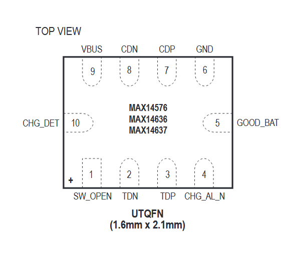

MAX14576 / MAX14636 / MAX14637

Pin Description
| PIN | NAME | FUNCTION |
|---|---|---|
| 1 | SW_OPEN | Data Switches Open Indicator. SW_OPEN is low when switches are closed. SW_OPEN is high impedance when switches are open. SW_OPEN is an open-drain output. Connect SW_OPEN to a pullup resistor externally. |
| 2 | TDN | USB Transceiver D- Connection |
| 3 | TDP | USB Transceiver D+ Connection |
| 4 | CHG_AL_N | Charging Allow Indicator. CHG_AL_N is low when VBUS is valid and charging is allowed. CHG_AL_N is an open-drain output. Connect CHG_AL_N to a pullup resistor externally. |
| 5 | GOOD_BAT | Good Battery Digital Input. Set GOOD_BAT low for a dead battery and enable USB BC 1.2 compliant dead battery charging. Set GOOD_BAT high for a good battery. |
| 6 | GND | Ground |
| 7 | CDP | USB Connector D+ Connection |
| 8 | CDN | USB Connector D- Connection |
| 9 | VBUS | USB VBUS Input. Bypass VBUS to ground with a 0.1μF ceramic capacitor as close to the device as possible to achieve high ±15kV HBM ESD protection. |
| 10 | CHG_DET | Charger Detection Push-Pull Output. CHG_DET indicates the capability of the connected charger type (see Tables 1, 2, 3). |